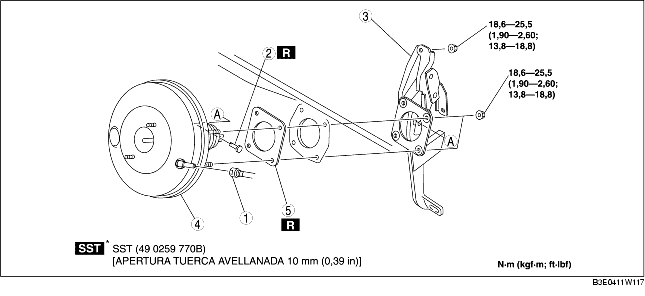

1. Efectuar el procedimiento siguiente y desplazar el tubo flexible de refrigeración (LO) en la posición que se muestra en la figura. (ZJ, Z6)
2. Efectuar el procedimiento siguiente y colocar el tubo flexible de refrigeración (LO) por debajo del vehículo. (LF)
3. Quitar el cilindro maestro. (Véase REMOCION/INSTALACION CILINDRO MAESTRO).
4. Quitar el conector del interruptor de frenos.
5. Quitar el pedal del acelerador. (Véase REMOCION/INSTALACION PEDAL DEL FRENO).
6. Quitar según el orden indicado en la tabla.
7. Instalar en el orden contrario al de la remoción.
8. Después de la instalación, controlar el pedal del freno. (Véase CONTROL PEDAL DEL FRENO).
9. Ajustar el cable del acelerador. [Véase CONTROL/AJUSTE CABLE DEL ACELERADOR (ZJ, Z6)]. [Véase CONTROL/AJUSTE CABLE DEL ACELERADOR (LF)].

.
|
1
|
Tubo de vacío
(Véase REMOCION/INSTALACION TUBO DE VACIO).
|
|
2
|
Clavija de junta
(Véase REMOCION/INSTALACION PEDAL DEL FRENO).
|
|
3
|
Conjunto pedal del freno
|
|
4
|
Unidad servofreno
|
|
5
|
Junta
|
1. Quitar las tuercas de instalación del pedal del freno.
2. Desplazar la unidad servofreno hacia la parte trasera del vehículo.
3. Quitar el conjunto pedal del freno.